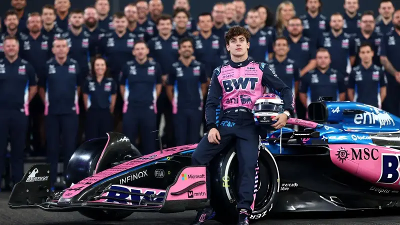

Franco Colapinto se ilusiona con la próxima temporada de la F1 tras el GP de Abu Dhabi: "Cero"

Luego de 18 fechas al mando del A525, Franco Colapinto finalmente terminó su participación en la Fórmula 1 2025 con un vigésimo lugar en el GP de Abu Dhabi, que tuvo como ganador a Max Verstappen y culminó con la consagración de Lando Norris. A pesar de haber llegado con la intención de buscar puntos para Alpine tras la salida de Jack Doohan, lo cierto es que el pilarense no logró meterse nunca entre los diez mejores en pista.
Como consecuencia, el piloto argentino cerró la temporada sin puntos y ubicado en el último lugar de la tabla, una muestra del complicado año que tuvo la escudería francesa, puesto que Pierre Gasly tuvo que batallar mucho para sumar. Ya tras el GP de Qatar, Colapinto había señalado que estaba ansioso por terminar el calendario y no tener que volver a subirse al A525 para competir y ahora tiene las esperanzas depositadas en 2026.
Y es que para la siguiente temporada, Alpine dejará de usar los motores de Renault y será motorizado por Mercedes, además de que la actualización de la normativa técnica hará que todos los equipos se reinicien en relación con el desarrollo de los monoplazas. De ahí que Franco haya dejado un mensaje esperanzador en su más reciente publicación en sus redes sociales: “Chauuuu A525. Reset y empezamos de cero, a trabajar para el 2026”.
Eso fue lo que escribió el pilarense en su cuenta de Instagram junto a algunas fotos de lo que fue la visita al Circuito Yas Marina, entre las que se destacan una del A525, otra con Gasly y Flavio Briatore, y una del equipo completo de Alpine, aunque hay un par más. No obstante, eso no fue todo lo que escribió Colapinto, que también agradeció a la escudería y felicitó a Norris por haberse quedado con el título: “Gracias equipo por esta primera temporada juntos. Felicitaciones, campeón, bien merecido Lando”.
Aunque es sabido que Franco Colapinto verá acción esta semana en las prácticas de postemporada que se realizarán en el Circuito Yas Marina, solamente serán unos días extras antes de iniciar sus vacaciones. De ahí que Alpine haya publicado un video en el que el argentino charla con su compañero sobre sus planes para el verano y haya adelantado que planea volver a la Argentina para pasar las fiestas y estar con su familia y amigos.
Dijo el Argentino
“Yo me vuelvo a casa con mi familia y amigos. Año Nuevo, Navidad y pasar tiempo allá, resetear, un poco de verano, así puedo volver bronceado en pocos días. Estoy muy blanco por el invierno en Europa. Es lindo, vuelvo a un poco de calor y mate”, afirmó el argentino. Además, invitó a Pierre a visitar Argentina, pero el piloto galo respondió que tiene planes para pasar el invierno europeo en Francia e Italia con su familia, aunque reconoció que le encantaría conocer Buenos Aires.
Comentarios
El Gorrion Lento
Para que lo llevan si saben como se pone!
Solucion a Todo
Hace muucchiiisiimo con el auto que tiene, talento argentino!!
Otro Castro
Vamossss franco queriidooo!!!!!!
Horacio Clan
Que inflado, espero que sepa que es solo ruido.
NOrma Trota
Me alegra el corazón ver gente de mi pais haciendo cosas geniales por el mundo, viva Argentina!!